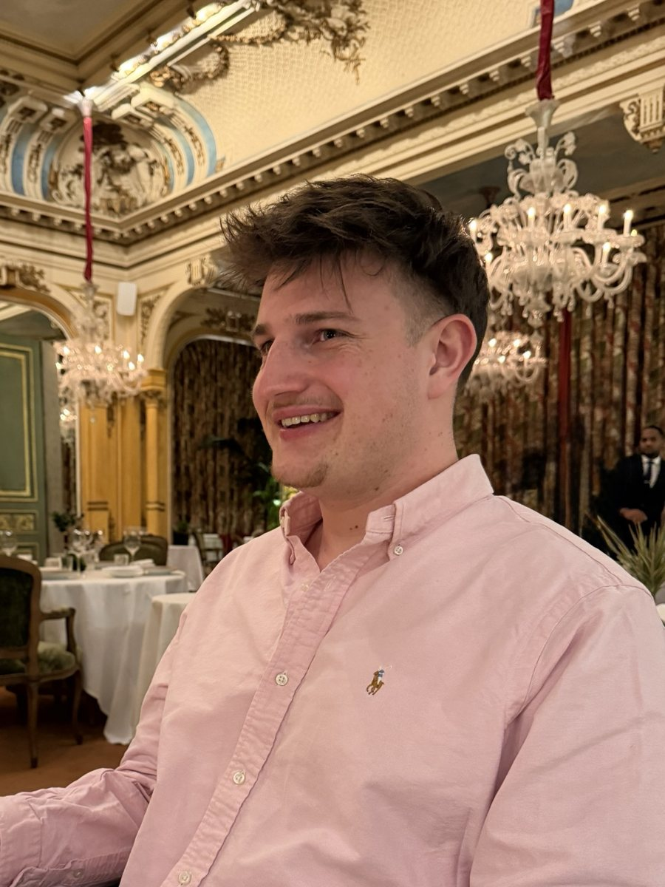

Ingénieur INSA Rouen Normandie, je transforme les données de santé — codage, facturation, référentiels — en indicateurs fiables et en outils concrets pour piloter l'activité.
Data Analyst diplômé de l'INSA Rouen Normandie (ingénieur en informatique et technologies de l'information), je me suis spécialisé dans la donnée de santé à travers une mission longue chez Ramsay Santé, leader européen de l'hospitalisation privée.
Au cœur de la chaîne codage → facturation → recouvrement, j'ai appris à faire parler des données sensibles et complexes : fiabiliser les référentiels (MDM), construire des KPI de pilotage sur Power BI, et développer des outils web pour que les équipes métier suivent leur activité en autonomie.
Mon approche : comprendre l'enjeu métier avant d'écrire la moindre requête, livrer des analyses lisibles et actionnables, et automatiser tout ce qui peut l'être.
Diplôme d'ingénieur — Informatique & technologies de l'information
Codage des actes, facturation hospitalière, MDM, qualité des données
Mobile · Français / Anglais
De la donnée brute au pilotage de l'activité hospitalière.
Ramsay Santé · Leader européen de l'hospitalisation privée — Programme Master Data Management
Analyse des données de codage des actes : contrôles de cohérence et d'exhaustivité, détection des actes manquants, incohérents ou mal codés, croisement avec les référentiels, et appui aux équipes des établissements pour fiabiliser le codage à la source.
Analyse des rejets de facturation : catégorisation des motifs de rejet, identification des causes racines, tableaux de suivi du retraitement et plans d'action pour réduire les rejets récurrents — un levier direct de sécurisation des recettes des établissements.
Conception de tableaux de bord de pilotage pour les équipes métier et le management : indicateurs de qualité des données, avancement du déploiement MDM, performance de la chaîne codage-facturation.
Développement d'une application web dédiée au suivi et à l'analyse des données du programme : consultation des référentiels, monitoring de la qualité, restitution en libre-service pour les utilisateurs.
Participation au pilotage du programme Master Data Management : cadrage des règles de gestion des données de référence, accompagnement des utilisateurs, documentation et adoption des nouveaux processus.
INSA Rouen Normandie · Projet certifié mené en conditions réelles pour un client
Conception et réalisation d'un POC de migration des données vers une base propre, structurée et documentée : modélisation, nettoyage, règles de transformation et validation de la cohérence.
Implémentation des calculs de KPI sur les données migrées pour offrir un suivi clair et exploitable des indicateurs métier, avec restitution auprès du client en fin de mission.
INSA Rouen Normandie · Grande école d'ingénieurs
Formation d'ingénieur en informatique et technologies de l'information : bases de données, algorithmique, développement, statistiques et analyse de données, gestion de projet.
Une sélection de projets professionnels, académiques et personnels.
Analyse de la chaîne codage → facturation : détection des anomalies et des écarts de facturation, suivi des rejets, fiabilisation des données pour sécuriser les recettes des établissements.
Conception de tableaux de bord pour le management et les équipes métier : KPI de qualité des données, avancement du déploiement MDM et performance de la facturation, du brut à la décision.
Développement d'une application web de suivi et d'analyse des données du programme MDM : consultation des référentiels, monitoring de la qualité et restitution en libre-service.
Mission de consulting certifiée INSA : migration de données vers une base propre, structurée et documentée, puis implémentation de KPI exploitables pour le suivi métier du client.
Étude du prix de l'immobilier en Californie : exploration des données, identification des facteurs clés de valorisation et visualisation des tendances avec Python.
Site 100 % fait main en HTML / CSS / JS vanilla : animations canvas, bilingue FR/EN, thème clair/sombre, version CV imprimable — hébergé sur GitHub Pages.
Je suis ouvert aux opportunités en data analyse, BI et data santé. Réponse rapide garantie.